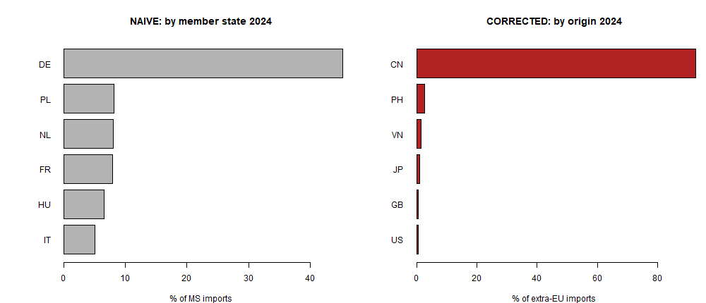
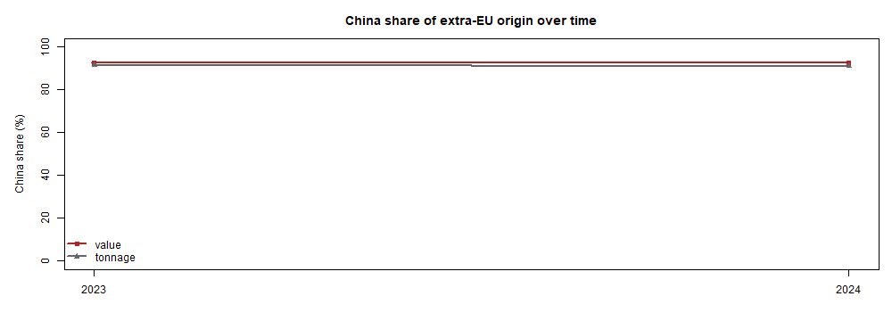
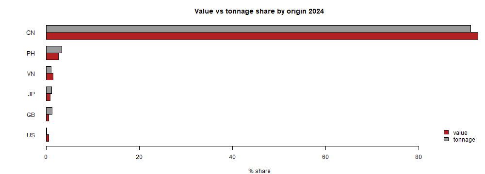
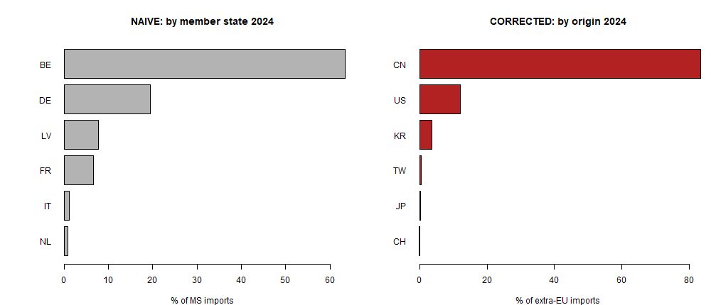
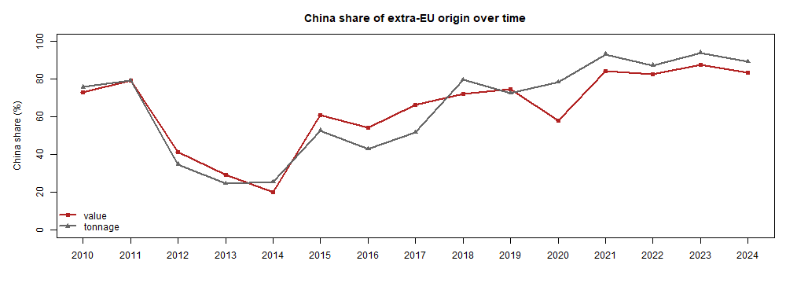
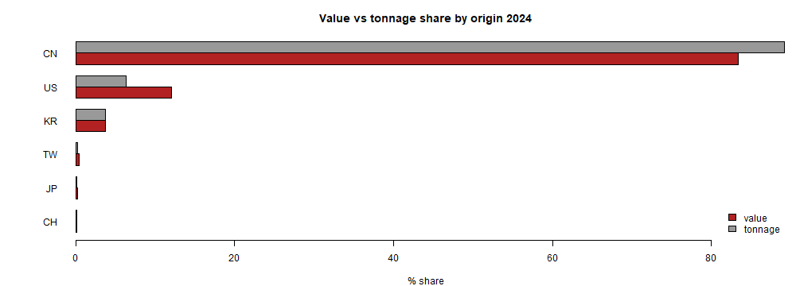
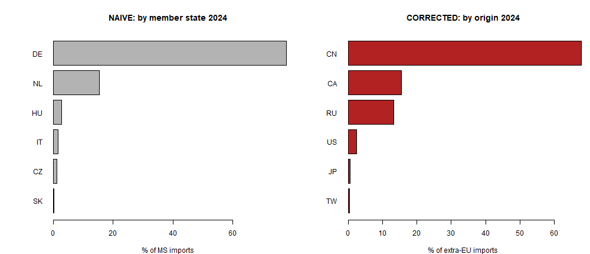
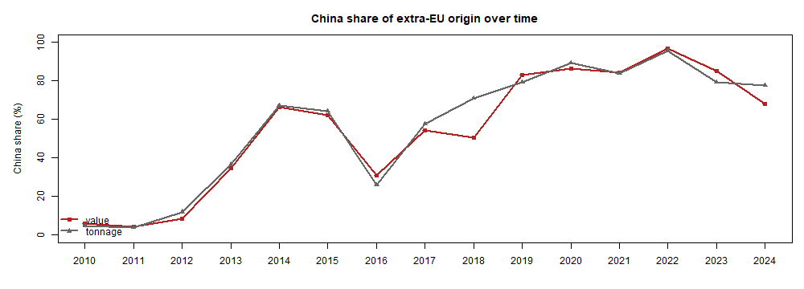
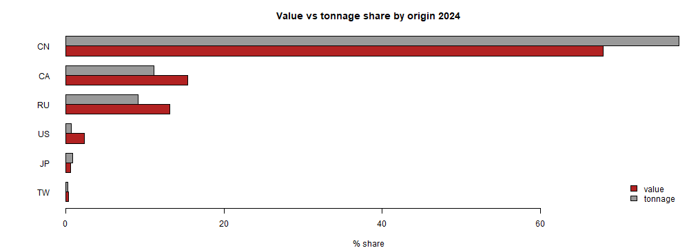

Extra-EU import dependency for critical products, corrected for the Rotterdam/Antwerp transit effect. Source: Eurostat Comext (public).
Naive rankings by importing member state measure where goods are customs-cleared, not where they come from - distorted by the NL/BE port effect. Corrected rankings treat the EU as one entity and rank by country of origin (for extra-EU flows the Comext partner field is the origin). The gap between the two panels below is the whole point.
Near-total concentration: one origin at ~93% of value, HHI ~0.86. The next origins (Philippines, Vietnam, Japan) are each under 3%.



| Origin | Value (EUR) | Tonnes | Value % | Tonnage % |
|---|---|---|---|---|
| CN | 727 661 958 | 18 246.4 | 92.7% | 91.1% |
| PH | 20 596 736 | 681.0 | 2.6% | 3.4% |
| VN | 11 867 653 | 221.4 | 1.5% | 1.1% |
| JP | 6 968 642 | 229.7 | 0.9% | 1.1% |
| GB | 4 658 800 | 256.1 | 0.6% | 1.3% |
| US | 3 924 858 | 29.7 | 0.5% | 0.1% |
The cleanest member-state trap: the naive view points at Belgium (Umicore's Antwerp refining hub - a processing/transit artefact), while the corrected view shows China at ~83%.



| Origin | Value (EUR) | Tonnes | Value % | Tonnage % |
|---|---|---|---|---|
| CN | 24 449 022 | 18.1 | 83.4% | 89.2% |
| US | 3 521 164 | 1.3 | 12.0% | 6.4% |
| KR | 1 089 363 | 0.8 | 3.7% | 3.7% |
| TW | 122 370 | 0.0 | 0.4% | 0.2% |
| JP | 55 289 | 0.0 | 0.2% | 0.1% |
| CH | 34 862 | 0.0 | 0.1% | 0.1% |
Watch the export controls: China's origin share fell 96.8% (2022) -> 85% (2023) -> 68% (2024) as Canada and Russia stepped in - the July-2023 controls visible directly in the customs record.



| Origin | Value (EUR) | Tonnes | Value % | Tonnage % |
|---|---|---|---|---|
| CN | 7 646 901 | 24.5 | 67.9% | 77.5% |
| CA | 1 738 796 | 3.5 | 15.4% | 11.2% |
| RU | 1 483 901 | 2.9 | 13.2% | 9.2% |
| US | 267 502 | 0.2 | 2.4% | 0.7% |
| JP | 66 698 | 0.3 | 0.6% | 0.9% |
| TW | 41 118 | 0.1 | 0.4% | 0.3% |